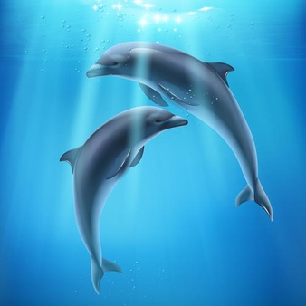

Los delfines son un tipo de mamíferos cetáceos pertenecientes a la familia Delphinidae. Pueden vivir más de 30 años en cautividad y tienen una longitud de 3,5 metros aproximadamente. En la naturaleza, estos nadadores elegantes pueden alcanzar velocidades de más de 30 kilómetros por hora. Durante sus desplazamientos surgen a menudo a la superficie del mar para respirar, haciéndolo una media de dos o tres veces por minuto. Viajan en grupos sociales y se comunican entre sí por un complejo sistema de chirridos y silbidos que del mismo modo les sirve para ecolocalizar a sus presas. Pueden producir hasta 1.000 "ruidos de clic" por segundo. Estos sonidos viajan bajo el agua hasta que encuentran objetos, luego regresan a sus remitentes de delfines, revelando la ubicación, tamaño y forma de su objetivo. Se trata de animales muy inteligentes que no dejan de sorprender a los científicos pues han mostrado capacidades de aprendizaje y cognición muy superiores a las de otras especies. .
